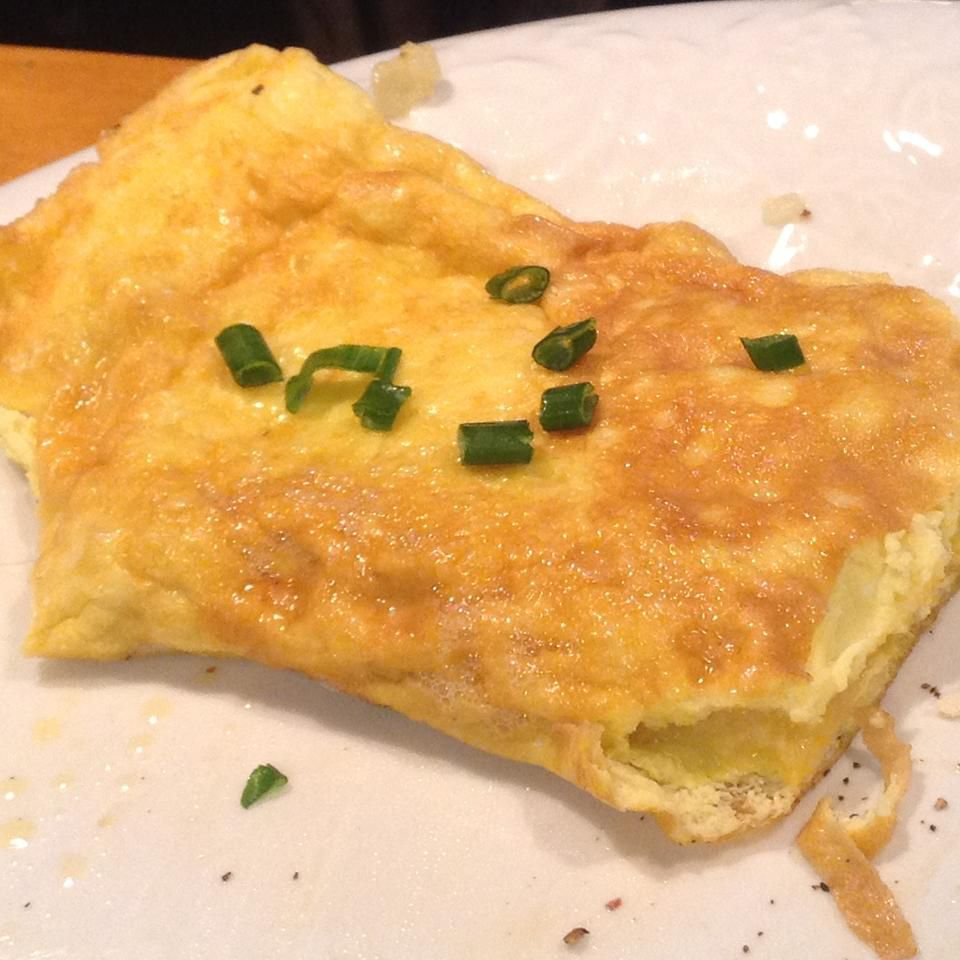

Omelette

Description:
Plato originario de Italia, too many years ago, un elixir de los dioses.
Low in fat.
Muito proteico.
It has a lot of Vitamine A, B and D. Some minerals like iron, magnesium, calcium and potassium.
Ingredients:
- 2 Eggs
- Olive Oil
- Salt and Pepper
- Milk
Steps:
- Un poco de aceite en una sarten a fuego medio.
- En un bol, agregar los huevos,a little of milk, salt and pimienta, y se revuelve hasta crear una mezcla homogenea.
- Una vez caliente el aceite, agregar los huevos al sarten, esperar a que los bordes esten cocinados, luega se levanta el omelette de un lado con espatula.
- Se voltea cuando este casi lista y se sirve en plato, saludos.